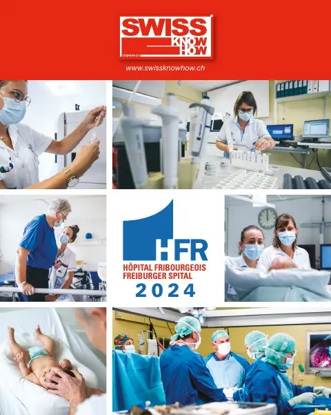

En bref
La cheffe du service d'oncologie de l'HFR décrit les progrès majeurs de la cancérologie, d'abord dans le diagnostic moléculaire des tumeurs, puis avec la « révolution » de l'immunothérapie. À l'aide d'images simples, un moteur défaillant à couper ou des lettres erronées dans un livre, elle explique les thérapies ciblées qui visent un mécanisme précis, contrairement à la chimiothérapie. L'immunothérapie réactive les défenses de l'organisme, avec un effet mémoire durable et une bonne tolérance pour la majorité des patients. Elle cite l'exemple du cancer du poumon métastatique, dont l'espérance de vie est passée de huit mois à deux ans ou plus. Un encadré présente les centres du sein et de la prostate créés en 2017 avec l'Hôpital Daler et leur tumorboard hebdomadaire.
« Mit Immuntherapien aktivieren wir das Immunsystem, so dass es die Krebszellen aus eigener Kraft zerstören kann. »— Alessandra Curioni-Fontecedro
L'interview intégrale
Unter der Leitung von Prof. Dr. med. Alessandra Curioni-Fontecedro setzen in der Klinik für Onkologie des HFR Ärztinnen, Ärzte und Pflegefachpersonen alles daran, Patientinnen und Patienten unabhängig von der Krebsart nach höchsten Qualitätsstandards zu behandeln. Im Interview spricht Prof. Curioni-Fontecedro über die Fortschritte in der Krebsmedizin, die Revolution durch Immuntherapien und wie die Therapien am HFR individuell auf die Patientinnen und Patienten zugeschnitten werden.
Frau Professorin Curioni-Fontecedro, welche Fortschritte wurden in den letzten Jahren in der Krebsmedizin erzielt?
Die wichtigsten Erfolge sind zweifellos im Bereich der Diagnose zu verzeichnen. Wir kennen heute verschiedene Tumorarten und die Mechanismen, die für ihr Wachstum verantwortlich sind. Hinzu kommt eine eigentliche Revolution durch die Immuntherapie. Wir verstehen inzwischen, wie das Immunsystem und die Krebszellen miteinander interagieren.
Mit diesen beiden Ansätzen können wir gezielte Krebstherapien anbieten. Einerseits greifen wir die Mechanismen an, die für den Krebs verantwortlich sind, andererseits können wir das Immunsystem so modulieren, dass es diese Zellen wieder bekämpfen kann. Von einer Revolution spreche ich, weil auf der Basis dieser Erkenntnisse Therapien entwickelt werden konnten, die zu einem längeren Überleben der Patientinnen und Patienten führen.
Ist das abhängig von der Art der Krebserkrankung?
Bestimmte Mechanismen sind typisch für die eine oder andere Krebsart. Bei Lungenkrebs gibt es bestimmte Veränderungen, die wir zum Beispiel bei Brust- oder Leberkrebs nicht finden. Gleichzeitig gibt es jedoch auch genetische Veränderungen, die sich über die verschiedenen Tumorarten hinweg finden lassen. Einige molekulare Veränderungen sind also spezifisch für bestimmte Krebsarten, andere nicht. Was gleich bleibt, ist die Analyse, die wir durchführen. Wir suchen nach diesen verschiedenen molekularen Veränderungen oder wie ich es den Patientinnen und Patienten erkläre: Wir suchen in einem Buch nach falschen Buchstaben oder Kapiteln, die nicht in der richtigen Reihenfolge sind. Denn das führt dazu, dass das Buch falsch gelesen wird. Wir suchen nach dem Mechanismus, der zum Krebs geführt hat.
Und weiss man, was zu diesen «falschen Buchstaben» führt?
Bei einigen Krebsarten kennen wir die Hauptrisiken. Bei Lungenkrebs ist es zum Beispiel das Rauchen, das zusammen mit Chemikalien die DNA schädigen kann. Auch UV-Strahlung kann die DNA beeinträchtigen und zu diesen molekularen Veränderungen führen.
Welches sind die Unterschiede zu früheren Krebsbehandlungen?
Die Chemotherapie wirkt zwar direkt auf schnell wachsende Zellen, aber nicht spezifisch für eine bestimmte Krebsart oder molekulare Veränderung. Dasselbe gilt für die Strahlentherapie.
Ganz anders die zielgerichteten Therapien, die exakt auf eine Veränderung bestimmter Krebszellen wirken. Ich erkläre das den Patientinnen und Patienten so: Die Krebszelle ist mit einem Motor ausgestattet. Dieser ermöglicht es ihr, sich schnell zu bewegen und zu wachsen. Bei einer zielgerichteten Therapie versuchen wir zu verstehen, was mit diesem Motor nicht stimmt, und finden den Schlüssel, um ihn auszuschalten. Wir wissen also genau, gegen was wir ankämpfen, bzw. welchen Mechanismus wir bekämpfen.
Sie haben über Immuntherapien gesprochen. Wie funktionieren diese?
Unser Immunsystem hat die Aufgabe, mögliche Fremdkörper zu eliminieren. Gleichzeitig soll es alle fehlerhaften Zellen erkennen und abtöten. Dieses Gleichgewicht des Immunsystems wird durch Krebszellen und ihre Mikroumgebung gestört. Die Krebszellen sind da, aber das Immunsystem bekämpft sie nicht. Mit Immuntherapien aktivieren wir das Immunsystem, so dass es die Krebszellen aus eigener Kraft zerstören kann.
Der Erfolg der Immuntherapien beruht auch auf der Langfristigkeit, denn das Immunsystem lernt und setzt die Bekämpfung der Krebszellen fort. Es hat also ein Gedächtnis und bekämpft auch neu entstehende Krebszellen.
Immuntherapien sind sehr wirksam, aber leider nicht die Lösung für alle Krebsarten und auch nicht für alle Patientinnen und Patienten. So kann es vorkommen, dass die Immuntherapie mit der Zeit nicht mehr wirkt. Was wir dann tun können, um das Immunsystem erneut zu aktivieren, wird intensiv erforscht.
Führt die moderne Onkologie zu einer höheren Lebenserwartung bei erkrankten Personen?
Absolut. Ich gebe Ihnen ein Beispiel: Vor 20 Jahren betrug die durchschnittliche Lebenserwartung von Patienten mit Lungenkrebs im Stadium IV, also wenn sich bereits Metastasen ausgebreitet haben, acht Monate. Heute sind wir bei bis zu zwei Jahren oder mehr. Und es gibt auch Menschen, die deutlich länger leben.
Aber das «Damoklesschwert» der Krebserkrankung bleibt.
Das ist so und das besprechen wir auch immer mit den Patientinnen und Patienten. Wir können keine genaue Prognose abgeben, denn jeder Mensch ist anders. Aber für uns ist wichtig, dass es den Patientinnen und Patienten gut geht. Wenn die Therapie anschlägt, sind sie fit und können sogar voll arbeiten. Und das bedeutet auch, dass sie sich besser wehren können, wenn der Krebs zurückkommt.
Heisst das, die Immuntherapien werden gut vertragen?
Ja, sie ist mit Chemotherapien nicht zu vergleichen. Immuntherapien werden von den meisten Patientinnen und Patienten sehr gut vertragen. Aber bei etwa einem Fünftel müssen wir uns auf mögliche Nebenwirkungen einstellen. Denn die Wirkstoffe der Immuntherapie stimulieren das Immunsystem. Ist diese Anregung zu stark, kann das Immunsystem unter Umständen auch andere Körperzellen angreifen. Ob und wie stark diese Nebenwirkungen auftreten, ist von Mensch zu Mensch unterschiedlich. In der Regel sind sie aber gut behandelbar.
Eine Krebsdiagnose ist ein Schock. Was raten Sie Patientinnen und Patienten im persönlichen Umgang mit ihrer Krebserkrankung?
Ich gebe ihnen den Rat, sich nicht auf das, was im Internet steht, zu verlassen. Jede Krebserkrankung und jeder Mensch sind anders, deshalb sollte man sich nicht mit anderen vergleichen. Es ist schon in Ordnung, sich zu informieren, aber man muss die Informationen auch einordnen können. Ich sage meinen Patientinnen und Patienten, dass wir am HFR zur Verfügung stehen, um genau die Krankheit zu diagnostizieren und bekämpfen und dass sie nicht allein sind. Wir sind ein grosses Team mit exzellenten Onkolginnen und Onkologen sowie Pflegekräften, das wirklich für die Patientinnen und Patienten da ist.
Brustzentrum und Prostatazentrum Freiburg
2017 haben das freiburger spital (HFR) und das Daler-Spital im Rahmen einer innovativen öffentlichprivaten Partnerschaft das Prostatazentrum und das Brustzentrum Freiburg gegründet. Die Klinik für Onkologie des HFR ist eng in die Zentren eingebunden. Einmal wöchentlich treffen sich die verschiedenen Fachpersonen im Rahmen des Tumorboards, einer multidisziplinären Sitzung, um die Therapie der Patienten zu besprechen und zu evaluieren. Dank dem Austausch zwischen den verschiedenen Gesundheitsfachpersonen wird für jede Patientin oder jeden Patienten eine individuelle Therapie festgelegt und ein Behandlungsplan erstellt, resp. wenn nötig angepasst.
Texte paru dans Swiss Knowhow – HFR Hôpital fribourgeois 2024, p. 14-15.
Personnes citées
- Alessandra Curioni-FontecedroProfesseure, médecin-cheffe du service d'oncologie

Paru dans
Swiss Knowhow – HFR Hôpital fribourgeois 2024
2024 · page 14-15 · article original en allemand
Lire l'article complet PDF